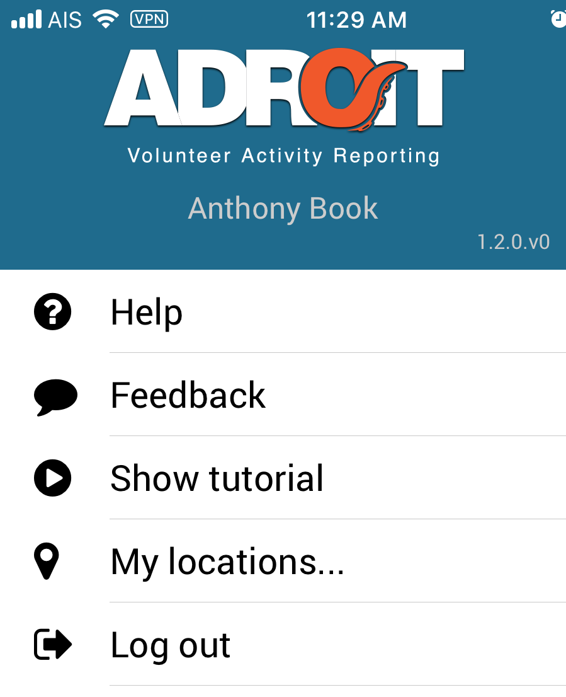
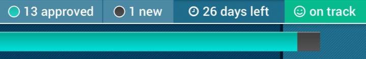

Welcome to Adroit Mobile!
We are very excited to have the Adroit Mobile app available for our volunteers to use to capture all the exciting ministry they are doing throughout Thailand. Although the app is very user-friendly, we do want to provide you with some brief information on using Adroit Mobile. These help pages will be divided into the following sections:
With that said, let’s get to it!
Interface Overview
When you log in for the first time, you will be presented with the “Getting started with Adroit” tutorial screen shown below. Everyone is encouraged to walk through this tutorial to get a basic overview of the various parts of the Adroit App.
If you ever want to go back and review the tutorial again, you can do so by clicking on the “hamburger” menu in the upper left and selecting “Show Tutorial”.
Basics of the Interface
This provides access to this help information, a link to provide feedback to FCF and its developers, view the tutorial again, manage your locations, and log out.
This status bar provides you with details regarding the number of photos you have uploaded in relation to the reporting period.
The status bar shows...
- How many of your uploaded photos have been approved
- How many of your uploaded photos are new (and yet to be approved)
- How many days are left in the current reporting period
- A quick visual on how you are doing:

- The bar graph (on the bottom) compares how far through the current reporting period we are (black vertical bar) with how many approved photos you have uploaded (green progress bar) and how many new photos you have uploaded (black progress bar). A good goal is to keep the green progress bar ahead of the black vertical bar.
This area shows the photos you have uploaded during the current reporting period, as well as the Activity Container, the Ministry Team, and a preview of the Caption.
Tap on the Add Photo button to add a new activity image. You can either select a photo from your camera roll or a new photo.
Adroit Mobile User Guide
To upload a photo, complete the following steps:
- Click the Add Photo button (see note 1 below).
-
On the “select a photo screen,” select a previously taken photo or
click the camera icon.
- If you select a photo, Adroit will display the photo; click Use Photo (in the upper right) to upload the selected photo to Adroit.
- If you click the camera icon (see note 2 below), you can then take a new photo.
- After selecting a photo or taking a new one, Adroit Mobile will upload the photo. In the center of the photo, look for a green check mark to confirm that the photo was successfully uploaded.
- Add a Caption.
- Set the Date.
- Pick or enter a Location. To add a new location, type the location at the top and click the blue “+ Add” button (see note 3 below).
- Select the Team.
- Select the Activity. This is the “activity container” to which you want the current photo connected.
- Tag people. Be sure to tag team members in the photo.
- Click Save.
-
After clicking save, you will be prompted with a confirmation pop-up:
- Confirm (tap the box) that your “caption” tells not only what you are doing but how this activity is helping local Thais.
- Confirm (tap the box) that you have tagged everyone on your team in the photo.
- If everything looks correct, click Upload. To make changes, click Go Back.
Updating Locations
To add a location, type the location at the top and click the blue plus (+) sign.
To remove a previously added location, click the red trash can across from the location to be removed.